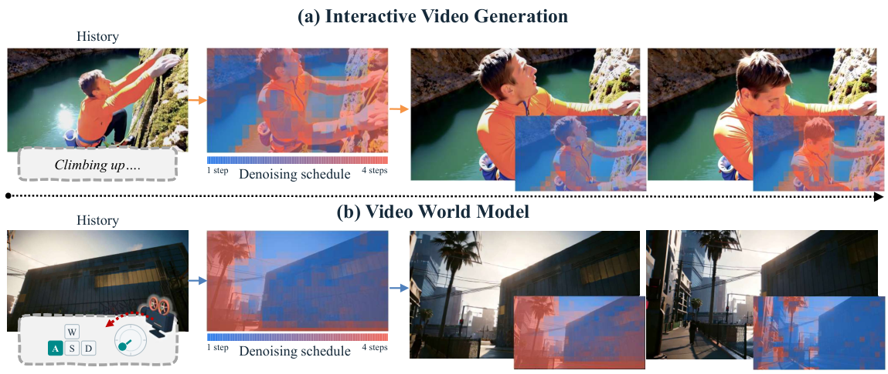
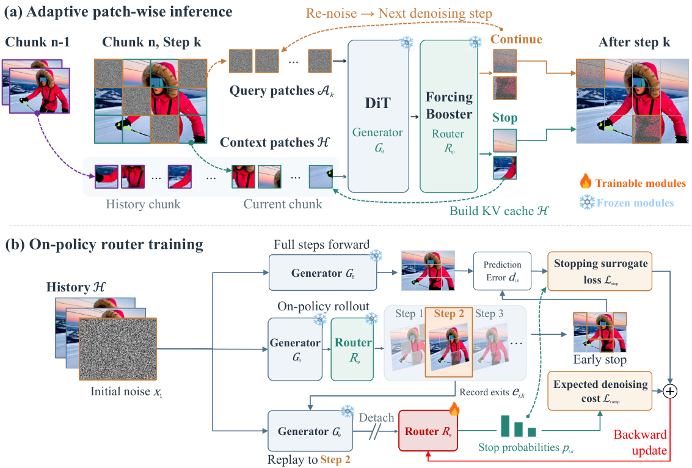
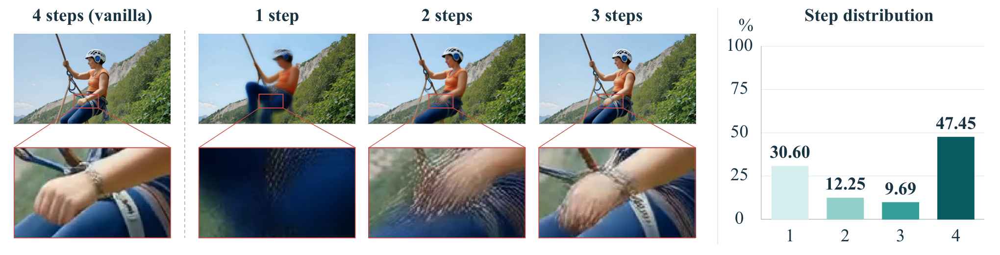
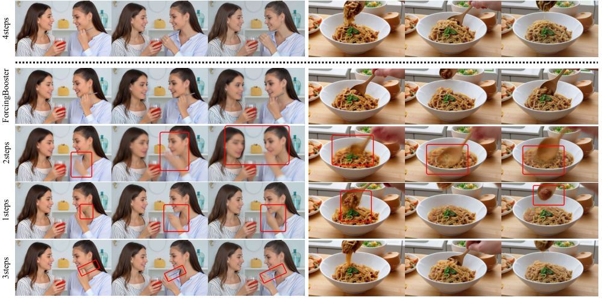
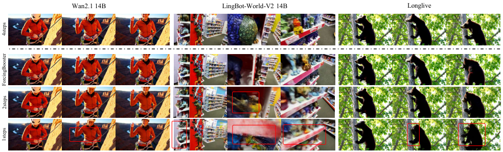
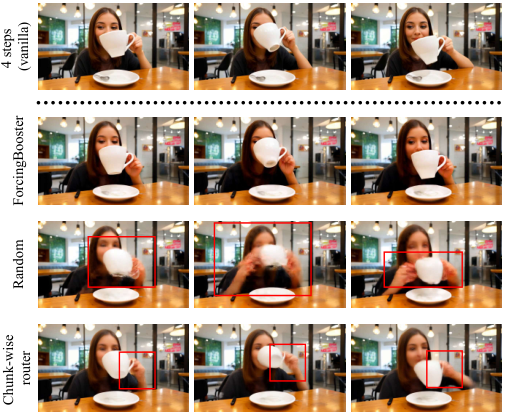
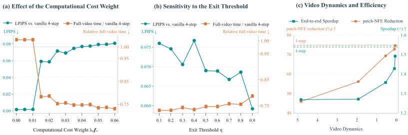

针对少步自回归视频扩散的「空间均匀计算预算」浪费:给冻结的 4 步生成器外挂一个轻量路由头(≈3.15M 参数),逐步预测每个 latent patch 的退出概率;易区域提前退出并把当时的 $\hat{x}_0$ 固定为输出、KV 写入历史缓存供其余 patch 使用。在 Causal Forcing 1.3B 上 patch-NFE 降 50.19%、端到端加速 1.30\times,VBench 与 4 步基线基本持平。
少步自回归视频扩散(如 Causal Forcing、Self-Forcing 系)已把每个 chunk 的去噪压到 4 步,但所有 latent patch 共享同一步数预算。ForcingBooster 的观察是:静态背景、可从历史推断的区域早在第 1~2 步就接近 4 步收敛输出,而运动物体、新入画区域、复杂纹理需要完整 4 步。方法给冻结的生成器外挂一个轻量路由头,每步之后为每个 patch 预测"退出概率";退出的 patch 把当前 $\hat{\mathbf{x}}_0$ 直接固定为最终输出,其 KV 写入历史缓存继续为未退出 patch 提供上下文。路由头用 on-policy rollout 自监督训练(以生成器自身 4 步输出为参照),无需额外视频数据、无需人工退出标注。

蒸馏后的少步生成器(4 步)对 chunk 内所有 patch 施加相同的 schedule 与 NFE。但受控实验(§11 图3)显示:30.60% 的 patch 在第 1 步后就与 4 步参考输出达到 35 dB PSNR,12.25% 第 2 步达标,9.69% 第 3 步达标 —— 即约一半的 patch 根本不需要完整 4 步,均匀预算在这些位置上纯浪费。
反向操作——整体把 4 步砍成 1~2 步——则让 47.45% 的"难 patch"欠精修:手、前臂等高频区域在 1 步时形状崩坏,2~3 步仍有可见畸变(原文 Figure 3 左)。这说明预算应该按空间位置分配,而不是全局砍。
蒸馏(DMD/CausVid/Self-/Causal Forcing)压缩的是"步数"维度;缓存系(TeaCache/AdaCache/FasterCache)压缩的是"重复计算"维度;DSA 只在整帧/整 chunk 粒度选步数;Patch Forcing 是图像生成;HSA 免训练但用缓存速度场继续推进被跳过的 token。没有人在"冻结的少步自回归视频生成器"上做学习式 patch 级早停并保留 KV 上下文。
扩散/流匹配生成器在每个中间步都能给出合法的 $\hat{\mathbf{x}}_0$ 估计(即使网络参数化是 noise/velocity 也可换算)。这把"提前退出"从"截断一条未完成的轨迹"变成"直接取用当前步的干净预测"——不需要修改采样 schedule,不同 patch 在不同步退出仍然各自合法。这是整个方法可行的支点。
输入:条件信号 $\mathbf{y}$(文本 / 相机位姿,视基座而定)、初始高斯噪声 $\mathbf{x}_1$、已生成历史的 KV cache $\mathcal{H}$。输出:当前 chunk 的干净 latent $\hat{\mathbf{x}}_0$(逐 patch 可能在不同步定稿)。生成器 $G_\theta$ 全程冻结,唯一可学习模块是路由头 $R_\phi$。
| 符号 | 含义 | 形状 / 取值(源码核实) |
|---|---|---|
| $K$ | 去噪步数(少步 schedule) | 4,denoising_steps: [1000, 750, 500, 250](warp 后,Wan1B3/config/router.yaml:23) |
| $\{t_k\}$ | 噪声水平 schedule,$t_0=1, t_K=0$ | warp 后映射到调度器网格(router_rollout.py:43-63) |
| $G_\theta$ | 冻结的自回归去噪网络 | Wan2.1-T2V-1.3B / 14B 等,因果注意力 + KV cache |
| $\mathcal{H}$ | 历史(已生成帧 + 已退出 patch)的 KV cache | 每层 dict,含 global_end_index/local_end_index 游标 |
| $\hat{\mathbf{x}}_{0,t_k}$ | 第 $k$ 步的干净 latent 预测 | $[B, F, C, H, W]$,chunk = 3 latent 帧(num_frame_per_block=3) |
| $\mathbf{u}_k$ | 第 $k$ 步生成器最后一层 hidden states | $[B, N, d]$,$d$=1536(1.3B)/5120(14B) |
| $R_\phi$ | 路由头,输出逐 patch 退出 logit | LayerNorm→Linear($d$→2048)→SiLU→Linear(2048→1),≈3.15M 参数(1.3B) |
| $p_{i,k}$ | patch $i$ 在第 $k$ 步的退出概率 | $\sigma(\text{logit})$,阈值 $\eta=0.5$ |
| $\mathcal{A}_k$ | 第 $k$ 步开始时仍活跃的 patch 集合 | 单调收缩,$\mathcal{A}_0$ = 全部 patch |
| $d_{i,k}$ | 当前预测与全步参考的 patch MSE | avg_pool3d 按 patch_size 池化(model/router.py:174-178) |
| $e_{i,k}$ | 继续去噪时该 patch 的最终退出步(on-policy 估计) | 由当前路由的完整 rollout 记录(model/router.py:336-343) |
| $\lambda_{\mathrm{nfe}}$ | 计算代价权重 | 0.03(配置 nfe_weight),消融区间 0.015~0.030 有效 |
| $\eta$ | 退出阈值 | 0.5(exit_threshold),训练推理同值 |
| 阶段 | 输入 | 算子 | 输出 |
|---|---|---|---|
| 去噪前向(第 $k$ 步) | $\mathbf{x}_{t_k}$:$[B,3,C,H,W]$(chunk=3 latent 帧);$t_k$;$\mathcal{H}$;$\mathbf{y}$ | 因果 DiT $G_\theta$(注意力带 KV cache) | $\hat{\mathbf{x}}_{0,t_{k+1}}$:$[B,3,C,H,W]$ |
| patch 网格化 | $\hat{\mathbf{x}}_0$ | 按 Wan patch_size$(p_t,p_h,p_w)$ 划分 | patch 网格 $[B, F/p_t, H/p_h, W/p_w]$ |
| 退出 patch 定稿 | $\hat{\mathbf{x}}_0$ + 退出 mask | merge_active_patches(torch.where) | 输出 latent 中对应 patch 冻结 |
| 继续 patch 加噪 | $\hat{\mathbf{x}}_0$ + 存活 mask | $(1-\sigma_{t_{k+1}})\hat{\mathbf{x}}_0 + \sigma_{t_{k+1}}\varepsilon$(逐 patch σ 广播) | $\mathbf{x}_{t_{k+1}}$ 供下一步 |
其中 $\mathcal{E}_{t_{k+1}}$ 是把干净预测映回下一噪声状态的算子。该形式化对 diffusion / flow matching 参数化统一:即使网络原生预测 noise 或 velocity,都可换算出等价的 $\hat{\mathbf{x}}_0$。源码中即流匹配插值:(1 - sigma) * pred_x0 + sigma * noise(rollout/router_rollout.py:107-111,σ 由 schedule 查表并经 patch_values_to_latent 广播到 latent 分辨率)。
常规采样是一条轨迹:中途停下得到的是"半成品噪声态",不能直接当输出。而 $x_0$ 参数化(或等价换算)让每一步都持有一个对最终干净结果的完整猜测,退出 = 采纳当前猜测。代价是猜测可能比走完 schedule 差,这个差距恰好由 §7 的 $d_{i,k}$ 监督量化。
_forward_dense,router_rollout.py:166-198)。本机制本身无参数、无监督;其"退出时机是否正确"的监督由 §7 的停止代理损失提供。
| 层 | 输入形状 | 算子 | 输出形状 | 出处 |
|---|---|---|---|---|
| 输入 | $[B, N, d]$($d$=1536, Wan 1.3B 末层 hidden) | —(前向中对输入 x.detach(),梯度不回传 backbone) | $[B,N,d]$ | causal_model.py:607-613 |
| L1 | $[B,N,d]$ | WanLayerNorm(affine) | $[B,N,d]$ | causal_model.py:594 |
| L2 | $[B,N,d]$ | Linear($d$→2048)+ SiLU | $[B,N,2048]$ | causal_model.py:595-596;head_dim: 2048(router.yaml:32) |
| L3 | $[B,N,2048]$ | Linear(2048→1),权重零初始化、bias 初始化为 -2.0 | $[B,N,1]$→squeeze 为 $[B,N]$ | causal_model.py:597, 602-605 |
参数量 ≈ $2d + (2048d+2048) + 2049$;$d{=}1536$ 时 ≈3.15M($d{=}5120$ 的 14B 基座 ≈10.5M)。bias 初始化 -2.0 → 初始退出概率 $\sigma(-2)\approx0.12 < \eta=0.5$,即路由器从"全都不退出"的安全态起步,靠代价损失逐步学会退出,避免训练初期破坏生成。
源码判定为 sigmoid(logits) > exit_threshold 则在该步标记退出(router_rollout.py:767-777 的 decide())。注意论文式 2 的 $p_{i,k}$ 写作"stop probability",代码中 logits 经 sigmoid 后直接与阈值比较,训练侧同样用 sigmoid 概率进损失(router_objective.py:42),两者一致。
退出 patch 做两件事:① 当前 $\hat{\mathbf{x}}_{0,t_{k+1}}$ 直接作为最终输出(merge_active_patches 写回);② 其 KV 被 collect 进稀疏 cache 段,后续步骤以 clear_kv_cache=prefix_cache 的方式作为只读前缀参与注意力(router_rollout.py:556-573)。这与 HSA 的"缓存速度场继续推进被跳过 token"相反——ForcingBooster 彻底冻结退出 patch,只保留其上下文贡献。

停止代理损失 $\mathcal{L}_{\mathrm{stop}}$ 与计算代价损失 $\mathcal{L}_{\mathrm{comp}}$(见 §7、§8)。路由头是全网唯一可训练参数(model/router.py:146-149 _freeze_except_router)。
论文 §3.3 只有一段话,但真正的工程量全在源码里。这一节完全来自源码阅读。
active_indices 做 index_select 取 timestep,生成器以 adaptive_forward_mode="sparse" 前向,携带 active_token_indices、rope_positions(保持 RoPE 位置正确)、collect_token_indices(本步退出、需收集 KV 的 token)(router_rollout.py:213-270)。{k, v, indices} 三元组存为 sparse cache piece,下一步经 _merge_sparse_caches 在序列维拼接成只读前缀(clear_kv_cache 参数),或直接写入 KV workspace(router_rollout.py:117-146, 161-164)。global_end/local_end 双游标,支持 local attention 窗口 rollover(router_rollout.py:386-434);训练 replay 时走"投机事务":先快照游标状态,跑完 rollback,不产生副作用(router_rollout.py:321-375, 460-472)。index_select、分段 KV 拼接、不规则序列长度会损失 kernel 效率,论文未给出 kernel 级 breakdown。论文描述:"用原始生成器全 schedule 跑出目标 $\mathbf{x}_0^*$ 并记录轨迹;把该 latent 扰动到随机噪声水平 $t_k$ 后回放(replay)得到中间预测与 hidden,计算损失"。源码实现比这段描述更精细(model/router.py:237-375 _router_loss),逐步对应如下:
_sample_chunk_and_step,model/router.py:224-235)。offload_training_history,router_training.py:18-34)。steps_map(每 patch 实际退出步)与转移噪声(显式索引保存,保证 replay 可复现,router_training.py:60-95)。exit_map = clamp(steps_map, max=selected_step)(在选中步强制退出)与 reference = 全 4 步,分别重放(事务式,不污染缓存),得到 exit 结果与全步参考。logits_at_step 沿相同 steps_map 重放,只在目标步开梯度取出路由器 logits(router_rollout.py:971-1095),损失只回传到路由头(其输入已 detach)。总目标 = $\mathcal{L}_{\mathrm{stop}} + \lambda_{\mathrm{nfe}}\mathcal{L}_{\mathrm{comp}}$(源码:loss = mse + nfe_weight * nfe,router_objective.py:51-54)。
nfe_weight,objective 注册名 latent_mse_plus_uniform_nfe(router_objective.py:27)。Wan1B3/config/adaptive_dmd.yaml),且 Wan14B 的 router 配置默认 init 就是 adaptive_dmd 的产物(Wan14B/config/router.yaml weights.init)。论文未交代哪些实验用了该阶段【待核实:14B 的论文数字是否基于 adaptive DMD 后的生成器】。max_train_steps: 500;但 Wan14B 配置是 5000、LingBot 14B 是 1000,"约 500 步"只对主实验成立。| 损失项 | 公式 | 权重(真值) | 作用 | 源码出处 |
|---|---|---|---|---|
| 停止代理损失 $\mathcal{L}_{\mathrm{stop}}$ | $\frac{1}{|\mathcal{A}_k|}\sum_{i\in\mathcal{A}_k} p_{i,k} d_{i,k}$ | 1.0(固定) | 预测离全步参考越远,越不许退出 | router_objective.py:51(mse = (probs*error).sum()/denominator) |
| 计算代价损失 $\mathcal{L}_{\mathrm{comp}}$(§4.5 又称 $\mathcal{L}_{\mathrm{nfe}}$) | $\frac{1}{|\mathcal{A}_k|}\sum_{i\in\mathcal{A}_k}[p_{i,k}k+(1-p_{i,k})e_{i,k}]$ | $\lambda_{\mathrm{nfe}}=0.03$(nfe_weight) |
鼓励早退,压制式 5 的平凡解 | router_objective.py:52-54;配置 router.yaml:25 |
| (可选)Adaptive DMD 阶段 | DMD 蒸馏损失(随机退出步采样,权重 [0.1,0.2,0.3,0.4]) | 生成器 lr 2e-6,critic lr 4e-7,EMA 0.99 | 让生成器适应"不同 patch 不同退出步"的混合轨迹 | Wan1B3/config/adaptive_dmd.yaml |
生成器本身无任何训练损失 —— 主干冻结,路由器输入 detach,梯度只进路由头 ≈3.15M 参数(model/router.py:146-149,causal_model.py:612)。
| 超参 | Wan 1.3B(主实验) | Wan 14B | LingBot-World-V2 14B |
|---|---|---|---|
| 训练步数 | 500 | 5000 | 1000 |
| 优化器 / lr | AdamW, lr = 1e-4(LingBot: betas [0.0,0.999], wd 0.01) | ||
| batch | 1/卡 × 8 卡 = 全局 8 | ||
| schedule | [1000,750,500,250], warp=true, shift 5.0(14B: 8.0) | timestep_indices [0,250,500,750], scheduler_shift 10.0 | |
| chunk 帧数(latent) | 3(num_training_frames 21) | 4(num_training_frames 20, 77 像素帧) | |
| 首 chunk 步数 | 4(first_chunk_step) | ||
| 训练 chunk 范围 / 步选择 | chunk∈[1,6](LingBot [1,4]),step∈{1,2,3} | ||
| η / λ_nfe / bias 初始化 | 0.5 / 0.03 / -2.0 | ||
| head_dim | 2048 | ||
| 训练数据 | Self-Forcing 的 vidprom_filtered_extended.txt(纯文本 prompt) | DL3DV-10K(dl3dv_i2v_camera 格式,图像+相机位姿条件) | |
出处:methods/Wan21/Wan1B3/config/router.yaml、methods/Wan21/Wan14B/config/router.yaml、methods/LingBotWorld/LingBotV2_14B/config/router.yaml。
Wan T2V 系成立(训练只需 prompt 文件,监督由冻结生成器自产)。但 LingBot 世界模型的 router 配置数据是 DL3DV-10K 的图像+相机位姿 —— 因为相机条件 I2V 模型本身需要条件输入。严格说"no additional video data"对世界模型场景要打个折扣:仍需准备与基座训练分布匹配的条件数据。
router_training_contract)写入 manifest,resume 时校验目标函数版本,防止用旧目标训出的 checkpoint 静默错配(router_objective.py:23-35;trainer/router.py:199)。enable_patch_exit_router_prediction 与 sparse 前向接口 —— 仓库内 Wan / LingBot / H3 三个后端各自改了 attention 与 cache 层,接到新模型不是"即插即用零改动"。| 论文宣称 | 源码事实 | 结论 |
|---|---|---|
| "without fine-tuning the heavyweight generator"(§5) | 仓库含可选 adaptive_dmd 阶段(50 iters 微调生成器);Wan14B router 默认从其产物初始化 | 宣称偏强,14B 实验是否用 adaptive DMD 未交代【待核实】 |
| "approximately 500 training steps"(§1) | Wan1.3B=500,Wan14B=5000,LingBot14B=1000 | 仅对主实验成立 |
| "without relying on additional video data"(§5) | T2V 成立;LingBot 需 DL3DV-10K 条件数据 | 部分成立 |
| 评测覆盖 4 个模型 | 仓库含 Wan21(1.3B/14B)、LingBot(1.3B/14B)、H3(SolarWM 33B);LongLive 的 router.yaml 是玩具配置(max_updates=20,仅 3 条 prompt),论文实验用的配置未发布 | LongLive 结果不可复现【待核实】 |
| 正文 §4.4 引用 "Table 6" | 全文只有 Table 1–3,应为 Table 3 | 论文笔误 |
| 方法 | Quality ↑ | Semantic ↑ | Total ↑ | Time (s) ↓ | Speedup | NFE 减少 |
|---|---|---|---|---|---|---|
| 1 step | 83.06 | 69.50 | 80.35 | 7.08 | 1.58× | 64.29% |
| 2 steps | 83.69 | 71.66 | 81.29 | 8.67 | 1.29× | 42.86% |
| 3 steps | 84.24 | 71.96 | 81.78 | 9.78 | 1.14× | 21.43% |
| 4 steps(基线) | 84.54 | 72.21 | 82.08 | 11.15 | — | — |
| ForcingBooster | 83.88 | 72.20 | 81.55 | 8.56 | 1.30× | 50.19% |
计时含文本编码、首 chunk、路由执行、KV 构建与 VAE 解码(论文 §4.1);81 帧 480×832@16FPS,单卡 A800 BF16。

| 基座 | 配置 | Quality ↑ | Semantic ↑ | Total ↑ | Speedup |
|---|---|---|---|---|---|
| Wan2.1 14B | 1 step | 82.10 | 71.35 | 79.95 | 1.96× |
| 2 steps | 84.71 | 77.93 | 83.35 | 1.29× | |
| 4 steps(基线) | 84.96 | 78.04 | 83.57 | — | |
| + ForcingBooster | 84.73 | 77.65 | 83.32 | 1.31× | |
| LingBot-World-V2 14B | 1 step | 78.79 | 69.72 | 76.98 | 1.98× |
| 2 steps | 80.13 | 71.65 | 78.43 | 1.36× | |
| 4 steps(基线) | 80.66 | 72.96 | 79.12 | — | |
| + ForcingBooster | 80.34 | 71.32 | 78.54 | 1.25× | |
| LongLive | 1 step | 78.91 | 73.18 | 77.76 | 1.54× |
| 2 steps | 79.91 | 72.67 | 78.46 | 1.21× | |
| 4 steps(基线) | 80.32 | 73.76 | 79.01 | — | |
| + ForcingBooster | 80.02 | 72.82 | 78.58 | 1.15× |
论文叙事强调"比 1-step 好得多、接近 4-step",这成立;但真正的对照组应该是同速的 uniform 2-step —— 在三个非主实验模型上,ForcingBooster 与 2-step 的差距在 ±0.12 Total 以内(VBench 噪声水平内),只有 Causal Forcing 1.3B 主实验有 +0.26 的可见优势。结论:方法收益对基座/规模敏感,14B 上是否值得引入稀疏推理的复杂度存疑。另外 Wan14B 2-step 基线 Total(83.35)几乎追平其 4-step(83.57)这件事本身,也说明强基座的 2-step 已经很难打。


| 策略 | Total ↑ | Time (s) ↓ | Speedup | 结论 |
|---|---|---|---|---|
| Random(保持退出步分布、打乱空间位置) | 79.03 | 8.60 | 1.29× | 严重闪烁与细节丢失 → 退出位置本身携带信息 |
| Chunk-wise router(patch 决策聚合为整 chunk 统一步数) | 80.01 | 8.38 | 1.33× | 少步 chunk 脸/手变糊 → patch 粒度优于 chunk 粒度 |
| ForcingBooster | 81.54 | 8.53 | 1.30× | 最接近 4 步基线 |
| 4 steps(基线) | 82.07 | 11.13 | — | — |
⚠️ 两处细节:① 论文正文此处引用了"Table 6",全文只有 Table 1–3,系笔误(应为 Table 3);② 本表 ForcingBooster 数字(81.54/8.53s)与 Table 1(81.55/8.56s)略有出入,应为另一次运行,差值在噪声内。


| 方法 | 年份 | 粒度 | 是否训练 | 改动对象 | 监督信号 | 适用基座 | 关键数字 | 开源 |
|---|---|---|---|---|---|---|---|---|
| ForcingBooster(本文) | 2026.10 | patch(逐 token) | 训练 ≈3.15M 路由头(500 步) | 冻结生成器,外挂头 | 与自身 4 步输出的 patch MSE + 期望步数代价(on-policy) | 少步自回归视频扩散(1.3B~14B) | NFE −50.19%,1.30×,Total −0.53 | ✅ 代码+部分 ckpt |
| DSA(Le et al., 2026) | 2026 | 整帧 / 整 chunk | 训练(置信头与生成器联合) | 生成器+置信头联合训练 | 置信度预测 | 自回归视频生成 | —(论文未直接对比) | — |
| Patch Forcing(Schusterbauer et al., 2026) | 2026 | patch | 训练生成器(空间变化噪声水平) | 需重新训练图像生成器 | 难度预测引导采样 | 图像扩散 | — | — |
| HSA(Chu & Patel, 2026) | 2026 | token | 免训练 | 推理期启发式 | 无(启发式预算) | 视频 DiT | — | — |
| TeaCache(Liu et al., 2025) | 2024.11 | 整步(缓存复用) | 免训练 | 推理期缓存 | timestep embedding 调制估计输出变化 | 视频扩散(双向为主) | — | ✅ |
| CausVid(Yin et al., 2025) | 2024.12 | 整模型(蒸馏) | 训练生成器(DMD 蒸馏) | 权重全量更新 | 分布匹配 | 双向→自回归视频 | 数十步→4 步 | ✅ |
| Causal Forcing(Zhu et al., 2026) | 2026 | 整模型(蒸馏) | 训练生成器(自回归教师初始化) | 权重全量更新 | 蒸馏 | 实时交互视频 | 本文基线(4 步,11.15s) | ✅(权重) |
"—" = 论文未给出可直接填入的数字。DSA / Patch Forcing / HSA 均为本文 Related Work 中点名的最近邻方法(arXiv 2606.04432 / 2604.19141 / 2605.06892);库内另有蒸馏系代表 DMD2 与基座 Wan2.1、流式方向 Wan-Streamer 的笔记可交叉阅读。
| 范式 | 代表方法 | 核心先验 | 局限 |
|---|---|---|---|
| 步数压缩(蒸馏) | DMD/DMD2 → CausVid → Self-/Causal Forcing | 少步学生可模仿多步教师分布 | 所有空间位置共享步数;再往下压步伤质量 |
| 计算复用(缓存) | DeepCache → TeaCache/AdaCache → Flow Caching | 相邻步/相邻 chunk 特征高度冗余 | 复用有误差累积;不减少"必须算"的部分 |
| 自适应预算(样本/chunk 级) | AdaDiff → DSA | 不同样本/片段难度不同 | 粒度粗,空间异质性没利用 |
| 自适应预算(patch/token 级) | Patch Forcing(图像)→ HSA → ForcingBooster | 同一片段内空间难度不均 | 稀疏 kernel 开销吃掉部分理论收益;延迟随内容波动 |
主线(三维重建/数字人)与视频生成加速不直接相交,但两点可借鉴:① "中间步 $\hat{x}_0$ 随时可取"的早停范式可迁移到任何迭代式精修流程(如 3DGS 致密化中按区域早停);② "冻结主干 + 小头学退出时机"的自监督构造(用满预算输出当免费 reference)是个低造数据成本的通用套路。若未来数字人驱动侧接实时视频生成模型(如 Wan-Streamer 系,见 Wan-Streamer 笔记),本方法可作为推理侧加速备选,但优先验证 2-step 简单基线。
| 改进点 | 优先级 | 关键依据 |
|---|---|---|
| 弥合 NFE-时间差距(kernel/首 chunk/breakdown) | 高 | 1.30× vs 2.0× 落差;router_rollout.py:905-936 额外前向 |
| 14B 上相对 2-step 无优势的对照与机制改进 | 高 | Table 2 复核(§11.2) |
| 超越"模仿 4 步"的监督信号 | 中 | 式 4 的参考构造 |
| 固定延迟预算的可控分配 | 中 | Figure 7(c) 内容自适应波动 |
| η 条件化、免多训 | 中 | Figure 7(b) 每阈值一模型 |
个人最关键的三点:① 时间/NFE 落差(决定方法的真实价值);② 14B 上与 2-step 打平(决定适用范围);③ 监督上限锁死在基线质量(决定天花板)。
ForcingBooster 把"自适应计算"从样本/chunk 粒度推进到 patch 粒度,并用两个干净的工程决策落地:① $x_0$ 参数化让提前退出随时合法;② 冻结主干 + 3M 路由头 + on-policy 自监督,训练成本压到 500 步。它在"蒸馏 → 缓存 → 自适应预算"的演进线上补上了空间维度的一块拼图。
但独立复核揭示宣传与现实的距离:NFE −50% 只兑现为 1.30× 时间加速;在 14B 级基座上与 uniform 2-step 无实质差异;LongLive 实验配置未发布、adaptive DMD 阶段与"不微调生成器"的宣称存在张力。这是一篇思路漂亮、工程扎实(源码的事务式 KV、FSDP lockstep、checkpoint 契约都做得相当认真)、但收益适用范围比摘要读起来窄的工作。对 1.3B 级实时模型值得接入;对 14B 级,请先跑 uniform 2-step 基线。
| 作者 | 机构 | 角色 |
|---|---|---|
| Zekai Gu | HKUST · VAST | 一作 |
| Peng Wang | VAST | Project leader |
| Jiahao Lu, Yongsen Mao | HKUST | — |
| Cheng Lin | 澳门科技大学 | — |
| Yuan Liu | HKUST | 通讯作者 |